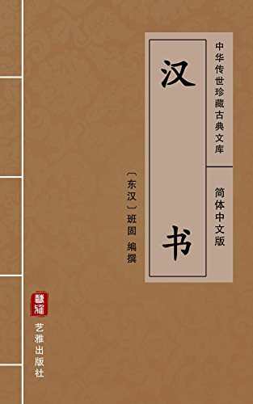

第42卷
第42卷#

【张周赵任申屠传第十二】
张苍，阳武人也，好书律历。秦时为御史，主柱下方书。有罪，亡归。及沛公略地过阳武，苍以客从攻南阳。苍当斩，解衣伏质，身长大，肥白如瓠，时王陵见而怪其美士，乃言沛公，赦勿斩。遂西入武关，至咸阳。
沛公立为汉王，入汉中，还定三秦。陈馀击走常山王张耳，耳归汉。汉以苍为常山守。从韩信击赵，苍得陈馀。赵地已平，汉王以苍为代相，备边冠。已而徙为赵相，相赵王耳。耳卒，相其子敖。复徙相代。燕王臧荼反，苍以代相从攻荼有功，封为北平侯，食邑千二百户。
迁为计相，一月，更以列侯为主计四岁。是时，萧何为相国，而苍乃自秦时为柱下御史，明习天下图书计籍，又善用算律历，故令苍以列侯居相府，领主郡国上计者。黥布反，汉立皇子长为淮南王，而苍相之。十四年，迁为御史大夫。
周昌者，沛人也。其从兄苛，秦时皆为泗水卒史。及高祖起沛，击破泗水守监，于是苛、昌以卒史从沛公，沛公以昌为职志，苛为客。从入关破秦。沛公立为汉王，以苛为御史大夫，昌为中尉。
汉三年，楚围汉王荥阳急，汉王出去，而使苛守荥阳城。楚破荥阳城，欲令苛将，苛骂曰：「若趣降汉王！不然，今为虏矣！」项羽怒，亨苛。汉王于是拜昌为御史大夫。常从击破项籍。六年，与萧、曹等俱封，为汾阴侯。苛子成以父死事，封为高景侯。
昌为人强力，敢直言，自萧、曹等皆卑下之。昌尝燕入奏事，高帝方拥戚姬，昌还走。高帝逐得，骑昌项，上问曰：「我何如主也？」昌仰曰：「陛下即桀、纣之主也。」于是上笑之，然尤惮昌。及高帝欲废太子，而立威姬子如意为太子，大臣固争莫能得，上以留侯策止。而昌庭争之强，上问其说，昌为人吃，又盛怒，曰：「臣口不能言，然臣期期知其不可。陛下欲废太子，臣期期不奉诏。」上欣然而笑，即罢。吕后侧耳于东箱听，见昌，为跪谢曰：「微君，太子几废。」
是岁，戚姬子如意为赵王，年十岁，高祖忧万岁之后不全也。赵尧为符玺御史，赵人方与公谓御史大夫周昌曰：「君之史赵尧年虽少，然奇士，君必异之，是且代君之位。」昌笑曰：「尧年少，刀笔吏耳，何至是乎！」居顷之，尧侍高祖，高祖独心不乐，悲歌，群臣不知上所以然。尧进请问曰：「陛下所为不乐，非以赵王年少，而戚夫人与吕后有隙，备万岁之后而赵王不能自全乎？」高祖曰：「我私忧之，不知所出。」尧曰：「陛下独为赵王置贵强相，及吕后、太子、群臣素所敬惮者乃可。」高祖曰：「然。吾念之欲如是，而群臣谁可者？」尧曰：「御史大夫昌，其人坚忍伉直，自吕后、太子及大臣皆素严惮之。独昌可。」高祖曰：「善。」于是召昌谓曰：「吾固欲烦公，公强为我相赵。」昌泣曰：「臣初起从陛下，陛下独奈何中道而弃之于诸侯乎？」高祖曰：「吾极知其左迁，然吾私忧赵，念非公无可者。公不得已强行！」于是徙御史大夫昌为赵相。
既行久之，高祖持御史大夫印弄之，曰：「谁可以为御史大夫者？」孰视尧曰：「无以易尧。」遂拜尧为御史大夫。尧亦前有军功食邑，及以御史大夫从击陈豨有功，封为江邑侯。
高祖崩，太后使使召赵王，其相昌令王称疾不行。使者三反，昌曰：「高帝属臣赵王，王年少，窃闻太后怨戚夫人，欲召赵王并诛之。臣不敢遣王，王且亦疾，不能奉诏。」太后怒，乃使使召赵相。相至，谒太后，太后骂昌曰：「尔不知我之怨戚氏乎？而不遣赵王！」昌既被征，高后使使召赵王。王果来，至长安月余，见鸩杀。昌谢病不朝见，三岁而薨，谥曰悼侯。传子至孙意，有罪，国除。景帝复封昌孙左车为安阳侯，有罪，国除。
初，赵尧既代周昌为御史大夫，高祖崩，事惠帝终世。高后元年，怨尧前定赵王如意之画，乃抵尧罪，以广阿侯任敖为御史大夫。
任敖，沛人也，少为狱吏。高祖尝避吏，吏系吕后，遇之不谨。任敖素善高祖，怒，击伤主吕后吏。及高祖初起，敖以客从为御史，守丰二岁。高祖立为汉王，东击项羽，遨迁为上党守。陈豨反，敖坚守，封为广阿侯，食邑千八百户。高后时为御史大夫，三岁免。孝文元年薨，谥曰懿侯。传子至曾孙越人，坐为太常庙酒酸不敬，国除。
初任敖免，平阳侯曹窋代敖为御史大夫。高后崩，与大臣共诛诸吕。后坐事免，以淮南相张苍为御史大夫。苍来绛侯等尊立孝文皇帝，四年，代灌婴为丞相。
汉兴二十余年，天下初定，公卿皆军吏。苍为计相时，绪正律历。以高祖十月始至霸上，故因秦时本十月为岁首，不革。推五德之运，以为汉当水德之时，上黑如故。吹律调乐，入之音声，及以比定律令。若百工，天下作程品。至于为丞相，卒就之。故汉家言律历者本张苍。苍凡好书，无所不观，无所不通，而尤邃律历。
苍德安国侯王陵，及贵，父事陵。陵死后，苍为丞相，洗沐，常先朝陵夫人上食，然后敢归家。
苍为丞相十余年，鲁人公孙臣上书，陈终始五德传，言「汉土德时，其符黄龙见，当改正朔，易服色」。事下苍，苍以为非是，罢之。其后黄龙见成纪，于是文帝召公孙臣以为博士，草立土德时历制度，更元年。苍由此自绌，谢病称老。苍任人为中候，大为奸利，上以为让，苍遂病免。孝景五年薨，谥曰文侯。传子至孙类，有罪，国除。
初苍父长不满五尺，苍长八尺余，苍子复长八尺，及孙类长六尺余。苍免相后，口中无齿，食乳，女子为乳母。妻妾以百数，尝孕者不复幸。年百余岁乃卒。著书十八篇，言阴阳律历事。
申屠嘉，梁人也。以材官蹶张从高帝击项籍，迁为队率。从击黥布，为都尉。孝惠时，为淮阳守。孝文元年，举故以二千石从高祖者，悉以为关内侯，食邑二十四人，而嘉食邑五百户。十六年，迁为御史大夫。张苍免相，文帝以皇后弟窦广国贤有行，欲相之，曰：「恐天下以吾私广国。」久念不可，而高帝时大臣余见无可者，乃以御史大夫嘉为丞相，因故邑封为故安侯。
嘉为人廉直，门不受私谒。是时，太中大夫邓通方爱幸，赏赐累巨万。文帝常燕饮通家，其宠如是。是时，嘉入朝而通居上旁，有怠慢之礼。嘉奏事毕，因言曰：「陛下幸爱群臣则富贵之，至于朝廷之礼，不可以不肃！」上曰：「君勿言，吾私之。」罢朝坐府中，嘉为檄召通诣丞相府，不来，且斩通。通恐，入言上。上曰：「汝第往，吾今使人召若。」通至丞相府，免冠，徒跣，顿首谢嘉。嘉坐自如，弗为礼，责曰：「夫朝廷者，高皇帝之朝廷也，通小臣，戏殿上，大不敬，当斩。史今行斩之！」通顿首，首尽出血，不解。上度丞相已困通，使使持节召通，而谢丞相：「此语弄臣，君释之。」邓通既至，为上泣曰：「丞相几杀臣。」
嘉为丞相五岁，文帝崩，孝景即位。二年，晁错为内史，贵幸用事，诸法令多所请变更，议以適罚侵削诸侯，而丞相嘉自绌所言不用，疾错。错为内史，门东出，不便，更穿一门，南出。南出者，太上皇庙□垣也。嘉闻错穿宗庙垣，为奏请诛错。客有语错，错恐，夜入宫上谒，自归上。至朝，嘉请诛内史错。上曰：「错所穿非真庙垣，乃外□垣，故冗官居其中，且又我使为之，错无罪。」罢朝，嘉谓长史曰：「吾悔不先斩错乃请之，为错所卖！」至舍，因呕血而死。谥曰节侯。传子至孙臾，有罪，国除。
自嘉死后，开封侯陶青、桃侯刘舍及武帝时柏至侯许昌、平棘侯薛泽、武强侯庄青翟、商陵侯赵周，皆以列侯继踵，□□廉谨，为丞相备员而已，无所能发明功名著于世者。
赞曰：张苍文好律历，为汉名相，而专遵用奉之《颛顼历》，何哉？周昌，木强人也。任敖以旧德用。申屠嘉可谓刚毅守节，然无术学，殆与萧、曹、陈平异矣。